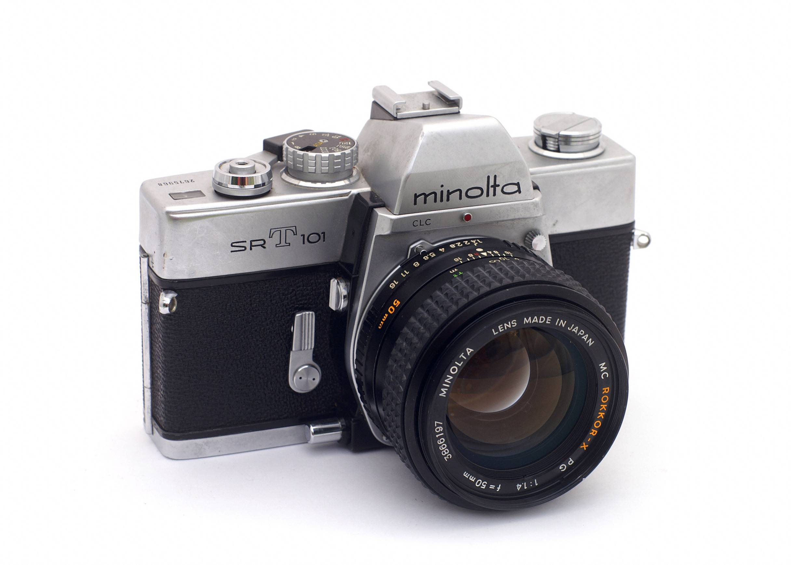

Gear

Minolta SRT 101
The Minolta SR-T 101 is a 35mm manual focus SLR camera with Through-The-Lens exposure metering – TTL for short - that was launched in 1966 by Minolta Camera Co. It was aimed at demanding amateur and semi-professional photographers. The SR-T 101 stayed in production for ten years with only minor changes.